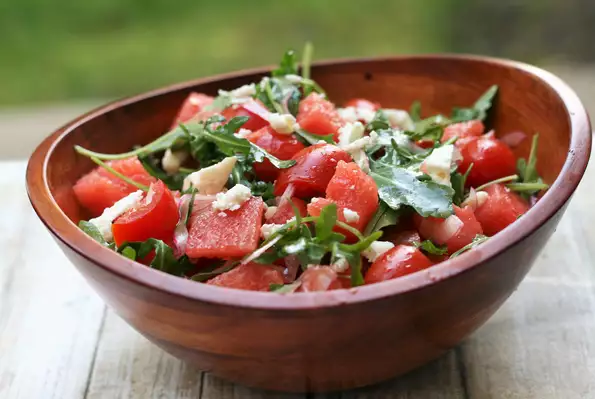

Salad

WaterMelon Feta Salad
Description
This is a great arugula and tomato salad with chunks of watermelon and feta cheese. Thanks to the watermelon, the kids will like it also!
Nutrition Facts
Per Serving:131 calories; protein 3.3g; carbohydrates 12.4g; fat 8.4g; cholesterol 12.6mg; sodium 284.3mg.
Ingredients
- 3 tablespoons olive oil
- 2 teaspoons white balsamic vinegar
- ½ teaspoon kosher salt
- 8 ounces grape tomatoes, halved
- 3 cups arugula
- 1 cup sliced red onion
- 2 pounds watermelon, cubed
- 4 ounces feta cheese, cut into 1/4-inch cubes
Steps
- Whisk olive oil, vinegar, and salt together in a large mixing bowl. Add tomatoes, arugula, and red onion; toss to coat. Gently stir in watermelon and feta cheese to serve.